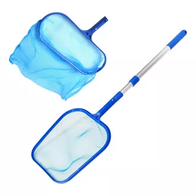
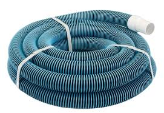
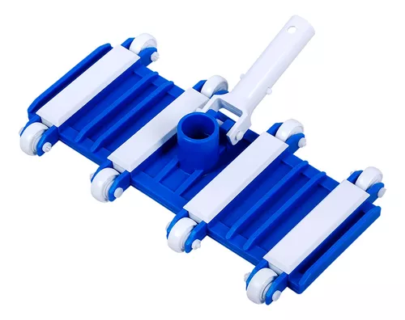
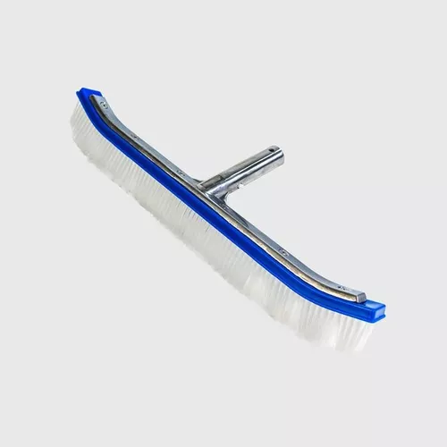
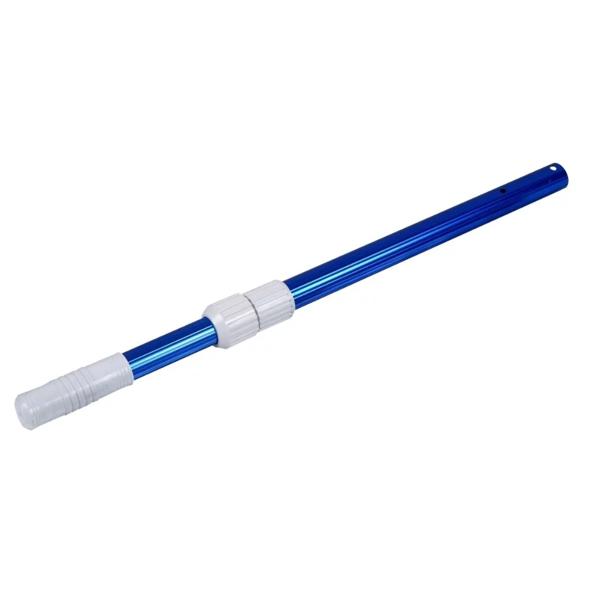
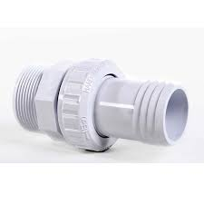
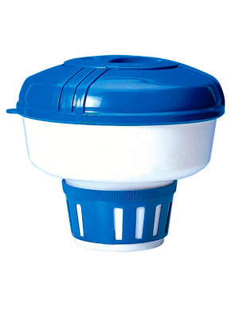

| IMAGEN | NOMBRE Y VALOR | DETALLE DEL ACCESORIO |
|---|---|---|
|  | NASA PLASTICA AMERICANA $ 25.000= NASA BORDE ALUMINIO $ 40.000 |
SIRVE PARA ASPIRAR HOJAS Y RESIDUOS DEL AGUA, SEGUN EL GRANDE DE LA PISCINA ASI MISMO SE REQUIERE SE CONECTA AL TUBO TELESCOPICO PARA MANIPULAR DESDE AFUERA DE LA PISCINA |
|  | MANGUERA DE 10 METROS $ 150.000 MANGUERA DE 15 METROS $ 200.000 |
PARA UTILIZAR COMO MEDIO DE ASPIRA EL AGUA SEGUN EL GRANDE DE LA PISCINA ASI MISMO SE REQUIERE POR METROS SE CONECTA UN ESTREMO AL CARRO DE ASPIRAR, EL OTRO ESTREMO AL ACOPLE, ESTE A SU VEZ A LA TOMA DE ASPIRAR |
|  | CARRO DE ASPIRAR 8 RUEDAS SENCILLO $ 80.000= CARRO DE ASPIRAR 8 RUEDAS PESADO |
CARRO PARA ASPIRAR, SI LA PISCINA ES PEQUEÑA SE RECOMIENDA EL SENCILLO PERO SI ES GRANDE SE RECOMIENDA EL PESADO O UNO DE 12 LLANTAS SU CONEXION DEBE SE A LA MANGUERA Y AL TUBO TELESCOPICO PARA MANIPULAR |
|  | CEPILLO DE NYLON DE 18" MANGO DE ALUMINIO $ 50.000 |
SIRVE PARA CEPILLAR PAREDES Y PISO DE PISCINAS SE CONECTA A UN ESTREMO DEL TUBO TELESCOPICO PARA MEJOR MANIPULACION |
|  | TUBO TELESCOPICO POR 5 METROS ESCUALIZABLE | SIRVE PARA CONTROLAR EL CARRO Y LA MANGUERA DE ASPIRAR SIRVE PARA MANEJO DEL CARRO DE ASPIRAR, NASA Y CEPILLO |
|  | ACOPLE RAPIDO COMPLETO $18.000= | SE CONECTA EN LA TOMA DE ASPIRAR Y LA MANGUERA |
|  | CLORINADOR PORTA PASTILLA TIPO OVNI $ 25.000= | EN SU INTERIOR SE APLICA PASTILLAS DE COLOR, Y SE PONE A FLOTAR EN LA PISCINA |